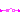
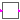

Library of partial blocks for components with clocked Boolean signals
Information
This package contains partial blocks that are used to
construct blocks operating on clocked Boolean signals.
Extends from Modelica.Icons.InterfacesPackage (Icon for packages containing interfaces).
Package Content
| Name | Description |
|---|
| SamplerIcon
| Basic graphical layout of block used for sampling of Boolean signals |
|  PartialSISOSampler
| Basic block used for sampling of Boolean signals |
|  PartialClockedSISO
| Block with clocked single input and clocked single output Boolean signals |
Basic graphical layout of block used for sampling of Boolean signals
Basic block used for sampling of Boolean signals
Information
Extends from Modelica_Synchronous.BooleanSignals.Interfaces.SamplerIcon (Basic graphical layout of block used for sampling of Boolean signals).
Connectors
| Name | Description |
|---|
| u | Connector of continuous-time, Real input signal |
| y | Connector of clocked, Real output signal |
Block with clocked single input and clocked single output Boolean signals
Information
Extends from Modelica_Synchronous.ClockSignals.Interfaces.ClockedBlockIcon (Basic graphical layout of block where at least one input or output is a clocked variable).
Connectors
| Name | Description |
|---|
| u | Connector of clocked, Real input signal |
| y | Connector of clocked, Real output signal |
Automatically generated Thu Oct 11 00:28:23 2012.